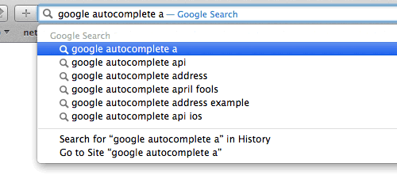
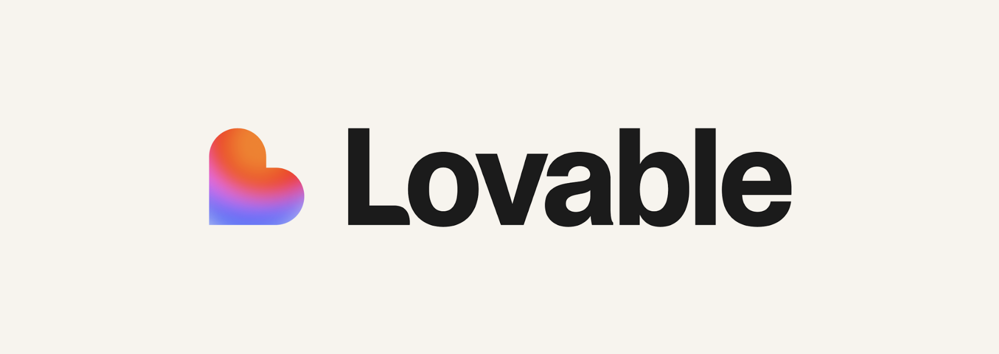
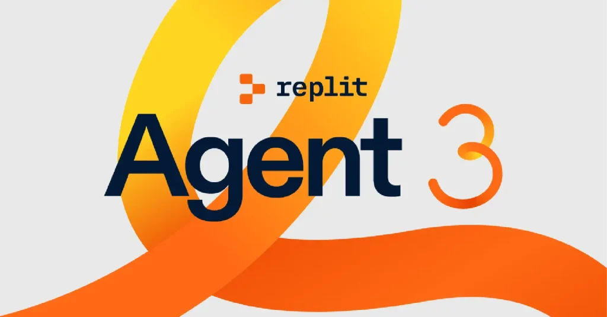
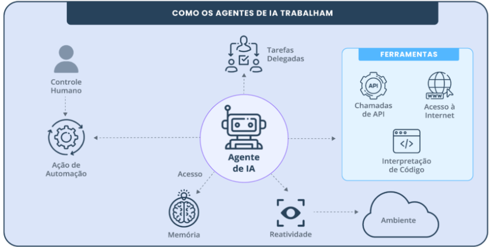
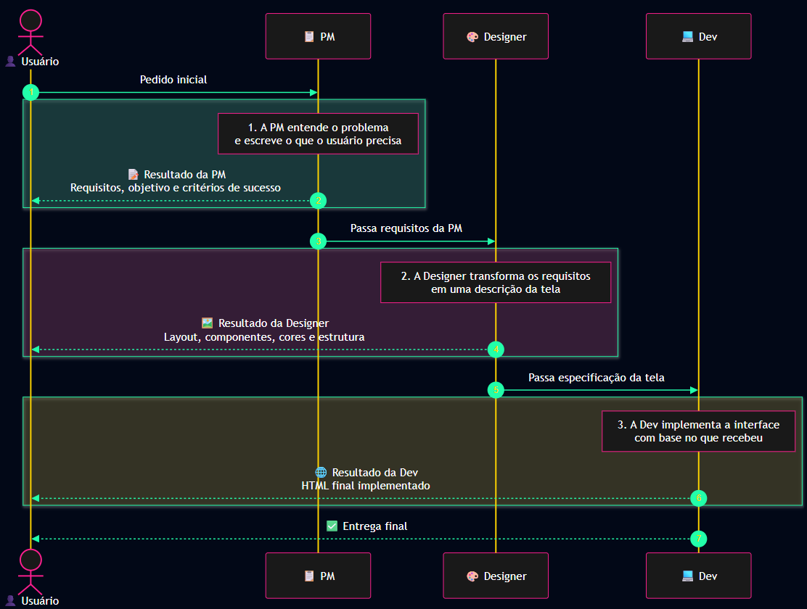

Bootcamp Hackathon • 60 min
Prompt
Engineering
para Vibe Coding
Como conversar com a IA para ela programar com você — mesmo sem saber código.
Use ← → para navegar • clique em “Notas” para o roteiro do apresentador
Mapa da aula
Estrutura geral
05 min
Abertura
Abertura
18 min
Modelo mental
Modelo mental
210 min
Bom prompt
Bom prompt
312 min
Técnicas base
Técnicas base
410 min
Código
Código
54 min
Ferramentas
Ferramentas
68 min
Agentes
Agentes
75 min
Checklist + Q&A
Checklist + Q&A
Bloco 0
O que é
vibe coding?
“Termo cunhado pelo Andrej Karpathy (ex-OpenAI/Tesla) em 2025: Você descreve o que quer em linguagem natural, a IA escreve o código, e você só lê o resultado se algo der errado.”
Tradução pro hackathon
Vocês descrevem a ideia. A IA programa. O segredo está em como vocês descrevem.
Prompt ruim vs prompt bom
A diferença não está só no modelo
Prompt ruim
faz um site de vendas
Resultado provável: genérico, sem identidade, sem restrições e com bugs.
Prompt bom
Crie uma landing page para uma cafeteria artesanal chamada “Grão Bravo”, paleta marrom/creme, com hero, 3 cards de produtos e formulário de newsletter. Use HTML + Tailwind, mobile-first.
Resultado provável: muito mais perto de algo usável.
Espaço para imagem
Exemplo visual: antes e depois


Por que AI Studio?
Ferramenta foco:
Google AI Studio
Grátis
Não precisa de cartão de crédito para começar.
Contexto enorme
Gemini com janela de contexto grande: cabe muito material no prompt.
Controle
Permite ajustar temperatura e system instructions sem API.
Bloco 1
Como a LLM “pensa”
Modelo mental simples: uma máquina de completar texto que prevê a próxima palavra mais provável.
Consequências práticas
O que muda no seu prompt?
- Ela responde no estilo de quem você invoca.
- Ela não sabe o que você não disse.
- Ela usa o contexto da conversa atual.
- Ela pode alucinar com confiança.
- A ordem do prompt importa.
Demo ao vivo
Especificidade
vence esperança
Prompt 1
escreva um poema
Prompt 2
escreva um poema curto, em português, sobre o cheiro de café pela manhã, no estilo de Manoel de Barros
Bloco 2
Anatomia de um bom prompt
1
Papel
Quem a IA está sendo.
2
Tarefa
O que ela precisa fazer.
3
Contexto
O que ela precisa saber.
4
Formato
Como a resposta deve sair.
5
Exemplos
Como se parece “certo”.
Template universal
Copie e cole este esqueleto
Você é [PAPEL].
Sua tarefa é [TAREFA EM UMA FRASE].
Contexto:
- [fato 1]
- [fato 2]
- [restrição importante]
Formato da resposta:
- [estrutura, linguagem, tamanho]
Exemplo de saída esperada:
[mostrar se possível]
Exemplo aplicado
Ruim: 8 palavras
Prompt fraco
me faz um app de lista de tarefas
Sem papel, sem requisitos, sem formato, sem restrições.
Exemplo aplicado
Bom: prompt padrão-ouro
Papel:
Desenvolvedor Frontend React com expertise em hooks modernos.
Objetivo:
Criar um componente React de lista de tarefas funcional e responsivo.
Entrada:
Componente autônomo com estado local usando hooks.
Requisitos:
- Adicionar, editar, excluir e concluir tarefas.
- Campo com validação.
- Design mobile e desktop.
Restrições:
- React 18+.
- TypeScript.
- Acessibilidade.
- Sem libs externas de estado.
Por que funciona?
O prompt bom reduz chute
Mais contexto
A IA sabe o que criar, para quem criar e com quais limites.
Mais formato
A resposta sai mais previsível, com menos retrabalho.
Mínimo viável para o hackathon: Papel + Objetivo + Requisitos de saída.
Exercício rápido
Crie um prompt para
calculadora de gorjeta
Tempo
3 minutos individualmente.
Obrigatório
Use os 5 ingredientes: papel, tarefa, contexto, formato e exemplo.
Bloco 3
Técnicas fundamentais
Zero-shot
Pedir direto, sem exemplos.
Few-shot
Mostrar exemplos antes de pedir.
Chain-of-Thought
Pedir raciocínio estruturado antes da resposta final.
3.1 Zero-shot
Pedir direto
Exemplo
Traduza para inglês: bom dia
Quando usar
- Tarefas simples.
- Coisas comuns.
- Quando o formato não é muito rígido.
3.2 Few-shot
Exemplos ensinam o padrão
Converta descrições em nomes de variáveis em camelCase.
Descrição: número total de usuários ativos
Variável: totalActiveUsers
Descrição: data do último login
Variável: lastLoginDate
Descrição: lista de produtos no carrinho
Variável:
Por que funciona?
A IA copia o padrão do exemplo. É uma das técnicas com maior retorno por esforço.
Regra prática: 2 a 5 exemplos costumam bastar.
3.3 Chain-of-Thought
Pense passo a passo
Forma mágica
Pense passo a passo antes de responder.
Forma estruturada
Primeiro, explique sua abordagem em bullets.
Depois, escreva o código.
Por fim, liste o que pode dar errado.
Debug com CoT
Quando a IA errar código
Esse código JavaScript não está funcionando. O botão não soma os números.
[colar código]
Pense passo a passo:
1. Leia o código e descreva o que ele FAZ hoje.
2. Descreva o que ele DEVERIA fazer.
3. Aponte a linha exata do bug.
4. Mostre só a linha corrigida.
Bloco 4
Técnicas avançadas
para código
Especificar→Contextualizar→Configurar→Iterar
4.1 Especificação antes da execução
Peça o plano antes do código
Antes de escrever qualquer código, me devolva:
1. Lista de arquivos que você vai criar.
2. O que cada arquivo faz, em uma frase.
3. Bibliotecas que você vai usar.
NÃO escreva código ainda. Aguarde meu OK.
Por quê?
Evita esperar um output gigante que tomou a direção errada.
4.2 Contexto é rei
A IA só sabe
o que está no chat
Código
Quer continuar? Cole o código atual.
Design
Quer seguir um visual? Cole cores, fontes e prints.
Estilo
Quer imitar escrita? Cole 2 ou 3 exemplos.
4.3 System Instructions
Uma regra para a conversa inteira
Você está ajudando um time de hackathon a construir um MVP em 24h.
- Priorize código que FUNCIONA.
- Use HTML + Tailwind + JS vanilla.
- Se algo for ambíguo, pergunte UMA coisa antes de codar.
- Responda em português.

4.4 Iteração
O ciclo do
vibe coder
PEDIR→RODAR→OBSERVAR→DESCREVER O ERRO→PEDIR DE NOVO
Como reportar erro
Cole o erro literal
Fraco
não funcionou
Forte
Ao clicar no botão “Enviar”, nada acontece. No console aparece: Uncaught TypeError: cannot read property 'value' of null. Diagnostique e corrija.
4.5 Restrições positivas
Diga o que fazer,
não só o que evitar
Evite
não use bibliotecas externas
não escreva nada além do código
Prefira
use apenas HTML, CSS e JavaScript nativos
responda apenas com o bloco de código, sem texto antes ou depois
4.6 Temperatura
Controle criatividade vs precisão
0–0.3
Código, matemática e respostas factuais.
0.7–1.0
Textos criativos, brainstorm e nomes de produto.
>1.0
Quase nunca útil no hackathon.
Bloco 5
Panorama de
ferramentas
Todas usam o mesmo motor por baixo: você descreve, uma LLM gera código, a ferramenta mostra o resultado.
Ferramentas
Quem faz o quê?
| Ferramenta | O que faz | Stack |
|---|---|---|
| Lovable | Gera app/site completo com banco. | React + Supabase |
| v0 | Gera tela/componente bonito. | React + Next.js + shadcn/ui |
| Bolt | Constrói apps no navegador. | React, Vue, Astro, Node... |
| Replit Agent | Constrói e hospeda. | Livre |
| Cursor/Windsurf | IDE com IA dentro. | Qualquer stack |
| AI Studio | Chat puro para copiar código. | Qualquer stack |
Espaço para imagens
Prints/logos das ferramentas


Como escolher
Regra prática
pro hackathon
- App web inteiro sem mexer em código → Lovable, Bolt, Replit Agent.
- Só uma tela bonita → v0.
- Alguém no time programa um pouco → Cursor ou Claude Code.
- Entender e copiar código → AI Studio.
Bloco 6
Padrões agênticos
Quando a LLM usa ferramentas, lê arquivos e decide o próximo passo, ela vira um agente.

Padrão 1
Reflexão
O que é?
A IA revê o próprio trabalho antes de entregar.
Depois de escrever o código, leia de novo como se fosse outro programador, aponte 3 possíveis bugs e corrija-os.
Padrão 2
Uso de ferramentas
Exemplos
- Buscar no navegador.
- Executar código.
- Ler PDF.
- Rodar comandos no terminal.
Use a busca do Google para confirmar a sintaxe atual da API antes de escrever o código.
Padrão 3
Planejamento
O que é?
A IA quebra o problema em passos antes de executar.
Quebre essa tarefa em no máximo 5 subtarefas. Execute uma de cada vez e me mostre o resultado entre elas.
Padrão 4
Multi-agente
Aja como três pessoas em sequência:
1. Uma PM, que escreve o que o usuário precisa.
2. Uma designer, que descreve a tela.
3. Uma dev, que implementa em HTML.
Mostre o resultado de cada uma antes de passar para a próxima.

Bloco 7
Top 7 erros
do iniciante
- Prompt curto demais.
- Não dar contexto.
- Não colar erros literais.
- Aceitar o primeiro resultado.
- Pedir tudo de uma vez.
- Confiar cegamente em libs.
- Deixar a conversa virar bagunça.
Checklist
Antes de apertar Enter
- Defini um papel para a IA?
- A tarefa está em uma frase clara?
- Dei contexto mínimo?
- Especifiquei formato?
- Se for código, pedi passo a passo?
- Se já tentei, colei erro/código atual?
Recursos
Para continuar
- Google Prompting Guide / Kaggle whitepaper
- OpenAI Prompting Guide
- Agentic Design Patterns — Antonio Gulli
- AI Engineering — Chip Huyen
- Google AI Studio
- O prompt do projeto de vocês
Anexos
Demos sugeridas
- Papel muda tudo: API para criança vs arquiteta.
- Few-shot salva nomes de variáveis.
- CoT vs direto em bug simples.
- Iteração: landing page em 3 rodadas.
Fechamento
Prompt bom
é briefing bom
Papel + Tarefa + Contexto + Formato + Exemplos. Isso funciona no AI Studio, ChatGPT, Lovable, v0, Cursor e qualquer outra ferramenta.
Q&A